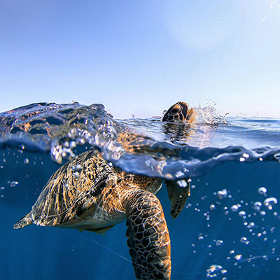

Raul's Modeling Agency
 The ocean is a mesmerizing world teeming with life, from the tiniest plankton to the largest blue whale, and each creature plays a vital role in maintaining the delicate balance of marine ecosystems. Playful dolphins glide gracefully through sunlit waters, often seen leaping above the waves, while majestic sea turtles slowly navigate coral reefs that burst with colorful fish darting in every direction. In the deeper, twilight zones of the ocean, bioluminescent jellyfish glow like ethereal lanterns, and the mysterious giant squid lurks in the shadows, rarely seen by human eyes. Schools of shimmering fish move as one, creating mesmerizing patterns that confuse predators, while clever octopuses use camouflage and intelligence to hunt and protect themselves. Coral reefs themselves are bustling cities of marine life, home to countless species of fish, crabs, starfish, and sea anemones, each contributing to the vibrant, complex ecosystem. Sharks, often misunderstood, are essential apex predators, keeping populations of other animals in balance and healthy. Even the smallest creatures, like sea urchins and shrimp, play critical roles in cleaning, aerating, and maintaining the health of ocean habitats. From the surface to the abyss, the diversity and adaptability of ocean animals are astonishing, reminding us of the wonders beneath the waves and the importance of protecting these incredible creatures and their habitats for generations to come.
Register for our free event
Join us for our free ocean showcase event, where you can dive into the wonders of marine life and explore the incredible creatures that call the sea home! From vibrant coral displays to interactive stations featuring fascinating ocean animals, there’s something exciting for all ages. Bring your friends and family for a day filled with learning, hands-on activities, and plenty of ocean-themed fun. Come discover the magic beneath the waves and celebrate the beauty of our oceans with us!
Registration Information“Last year’s event was incredible! The guided diving experience let me see ocean creatures up close—it was unforgettable. I’m definitely coming again!” Ava Martinez
“The previous event was super well organized and really engaging. I loved learning more about ocean conservation—I’ll be back for sure!” Liam Carter
“My family had such a great time at the last showcase. The shallow-water dive activity was a huge hit with the kids—they’re still talking about it!” Sohpia Reynolds